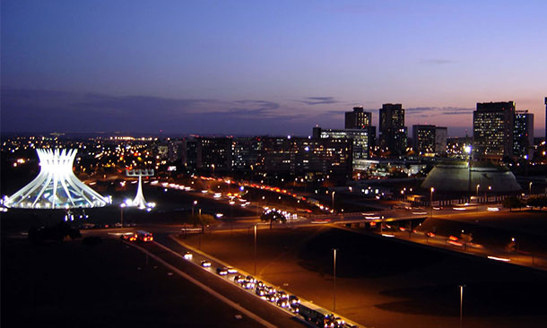

Urban Air Mobility — Brasil
Uma estratégia inteligente para planejar a integração do UAM e definir localizações estratégicas.
O crescimento urbano gera deslocamentos mais complexos. Como atender a esses fluxos de forma mais eficiente?
Congestionamentos e aumento no tempo de viagem afetam a produtividade e qualidade de vida.
Pressão crescente sobre a infraestrutura existente, com poucos corredores absorvendo toda a demanda.
Impacto direto na produtividade e na qualidade de vida da população urbana.
A definição depende de densidade populacional, atividade econômica e padrões de deslocamento.
Ver Seleção de Cidade →A distribuição espacial dessas operações pode indicar demanda para UAM no Brasil.
Ver Caracterização de Brasília →Identificação de padrões espaciais e regiões com maior concentração de demanda potencial.
Ver Seleção de Vertiporto →A partir da análise das operações de drones, foi possível identificar um ranking nacional.
Maior região metropolitana e elevado potencial, apesar da complexidade operacional.
Forte demanda turística e urbana, com desafios operacionais únicos.

Alta concentração per capita e planejamento urbano favorável à implantação.
Descubra como dados reais podem orientar decisões estratégicas de mobilidade aérea urbana.
Explorar Análises